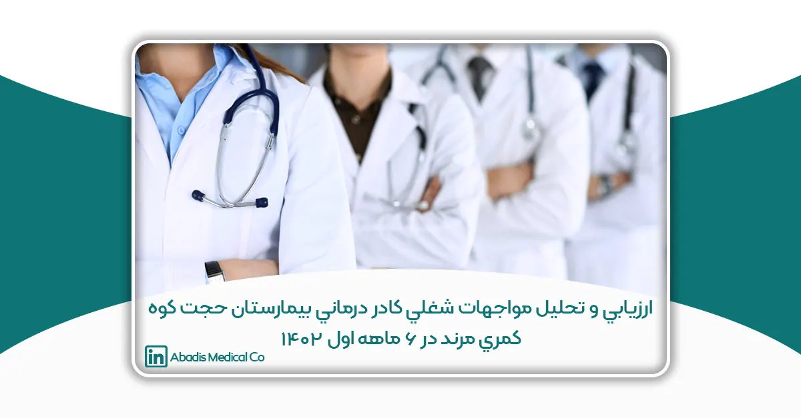
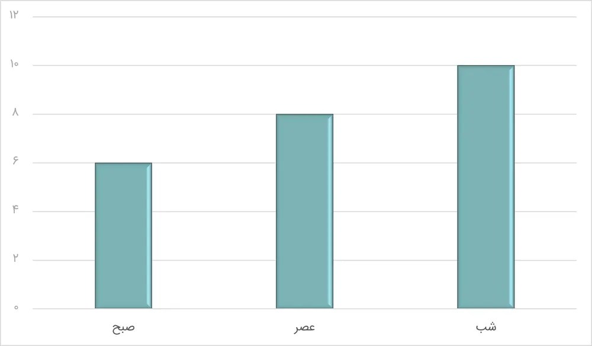

این مقاله توسط سرکارخانم رويا ذاكرى، سرکار خانم طيبه رضائی، جناب آقای قنبر گلدوست، جناب آقای علی روكا و سرکارخانم معصومه عابدينی نوشته شده؛ و برای یازدهمین کنگره کنترل عفونت ارسال شده است.
مقدمه
هرگونه تماس با خون و مايعات بدن افراد از راههايی نظير صدمات ناشی از اجسام نوک تيز مانند سوزن و تيغ جراحی يا تماس مخاطي با قطرات تنفسی و يا پاشيده شدن خون بزاق و ادرار و يا گاز گرفتگی و خراش توسط بيمارانی كه تعادل رفتارى ندارند را مواجهه شغلی (Exposure Occupational) گويند. پرسنل حرفه پزشكی بطور روزمره در معرض ابتلا به عفونتهاى ويروسی از جمله هپاتيتB و هپاتيتC و HIV قرار میگيرند اجتناب از تماس شغلی با خون اولين راه جلوگيرى از انتقال ويروسهاى فوق در پرسنل میباشد و همچنين واكسيناسيون هپاتيتB جزء مهمی از پيشگيرى از عفونت HBV پرسنل میباشد. انواع مواجهه شغلی كه ممكن است نيروهاى ارائه دهنده خدمات بهداشتی و درمانی را در خطر عفونت با ويروسهاى Hepatitis C (HCV)،(HBV) Hepatitis B،يا ويروس نقص ايمنی انسانیHuman Immunodeficiency Virus (HIV) قرار دهد، ممكن است به يكی از سه شكل مواجهه از راه پوست، مواجهه از راه غشاءهاى مخاطی، مواجهه از راه پوست ناسالم حادث شود. تماس با مايعات آلوده بدن يكی ديگر از مواجهات شغلی میباشد اين مايعات كه بالقوه ميتوانند عوامل عفونی مهمی همچون HCV،HBV و HIV را از طريق تماس شغلی منتقل كنند، عبارتند از: خون، سرم و پلاسما، تمام مايعات زيستی كه به خون آلوده باشند، مايع منی و ترشحات مهبل (بجز در مورد HCV، بزاق اگر آغشته به خون باشد و كشتهاى غليظ شده آزمايشگاهیHIV.)
با توجه به گستردگی مواجهات شغلی در سطح جهاني و صرف هزينههاى هنگفت براى درمان و پيگيرى افراد مواجهه يافته لازم است تا جهت پيشگيرى از حوادث شغلی براى كاهش هزينههاى مربوط به آن برنظام سلامت برنامههايی تدوين گردد براى دستيابی به برنامههاى جامع و كارآمد پيشگيرى ابتدا بايد وسعت و شيوع مواجهات شغلی در بيمارستان مشخص شود سپس براساس آن سياستگذاریها و برنامه ريزیهاى مناسب اعمال شود. لذا اين مطالعه با هدف ارزيابی و تحليل رخداد مواجهات شغلی در 6 ماهه اول 1402 انجام گرديد.
روش كار
اين يك مطالعه توصيفی- تحليلی است. در اين مطالعه، از ابتداى سال 1402، كليه گزارشات و فرمهاى مربوط به مواجهات شغلی از تمام ردههاى شاغل بيمارستان (شامل گروههاى پرستارى، مامايی، كمك پرستارى، دانشجويان و گروه خدماتي) در طول 6 ماه جمع بندى شده و نتايج آن در اكسل وارد شد. همچنين در كليه موارد رخداده، مصاحبه كاملی با فرد مواجه شده انجام و گزارشات وى جهت تحليلهاى بعدى بصورت مكتوب جمع بندى شده بود. در نهايت دادههاى مربوطه در كميته كنترل عفونت بيمارستان مورد بررسی قرار گرفته و راهكارى پيشگيرى كننده و اقدامات اصلاحی جهت اجرا مورد بحث و بررسی قرار گرفت. همچنين اين آمار با ميزان مواجهات شغلی سال قبل در 6 ماهه اول 1401 نيز مقايسه و تحليل گرديد.
نتايج
جمعبندى دادهها نشان داد ميزان مواجهه پرسنل براساس ردههاى شغلی مختلف به شرح ذيل است:
|
ميزان مواجهه شغلی براساس رشته شغلی در 6 ماهه اول سال 1402 |
ميزان مواجهه شغلی بر اساس رشته شغلی در 6 ماهه اول سال 1401 |
||
|
ميزان مواجهه شغلی |
رشته شغلی | ميزان مواجهه شغلی |
رشته شغلی |
|
١٠ |
پرستارى | ١٠ |
پرستارى |
|
5 |
دانشجوى پرستارى | ٠ |
دانشجوى پرستارى |
|
٠ |
علوم آزمايشگاهی | ٠ |
علوم آزمايشگاهی |
|
٢ |
تكنسين اتاق عمل | ٠ |
تكنسين اتاق عمل |
|
٢ |
تكنسين بی هوشی | ٠ |
تكنسين بی هوشی |
|
٠ |
پزشک | ٠ |
پزشک |
|
١ |
كمک بهيار | ٠ |
كمک بهيار |
|
٣ |
خدمات | ٠ |
خدمات |
|
٠ |
راديولوژى | ٠ |
راديولوژى |
|
١ |
ماما | ٠ |
ماما |
|
١ |
امحاء زباله | ٢ |
امحاء زباله |
|
25 |
جمع كل | ١٢ |
جمع كل |
همچنین دادهها نشان داد، از 25 مورد رخداده ٢ مورد ( 8%) مربوط به پاشيده شدن ترشحات عفونی به مخاطات، ٢٢ مورد (٨٨ %) نيدل استيک و ١ مورد (4%) تماس با ترشحات از طريق پوست باز بودهاست. موارد نيدل استيک شدن شامل پروسيجرهايی مانند خونگيرى، تزريقات وريدى، چك قند خون و تزريق انسولين، و در خدمات در زمان جمع آورى زباله ها يا تعويض ملافهها بود. از اين ميزان 56% مربوط به پرسنل شاغل در اورژانس، 16% اتاق عمل و 12% دياليز بود. اكثر موارد (44%) در شيفت شب رخ داده است. و كمترين موارد (4%) در صبح كارى بوده است.
نمودار مواجهات براساس شيفت كارى نيمسال اول

نتايج كلی مواجهات شغلی سال 1401-1402
|
تعداد كل پرسنل |
تعداد مواجهات شغلي | درصدمواجهات شغلي | فراوانی |
رديف |
|
520 |
25 | 4.80% | مواجهات شغلی نيمسال اول 1402 |
1 |
|
523 |
12 | 2.30% | مواجهات شغلی نيمسال اول 1401 |
2 |
بحث و نتيجه گيری
با توجه به بررسیهاى انجام شده علت افزايش ميزان مواجهات شغلی در سال 1402 نسبت به 1401، در واقع افزايش ميزان گزارشدهی بوده است. در طول اواخر 1401، جلسات آموزشی و توجيهی در خصوص اهميت گزارش مواجهات شغلی با پرسنل بخش ها بصورت جداگانه برگزار و توضيحات لازم به پرسنل ارائه گرديد. بسيارى از پرسنل كه تيتر بالايی داشته اند موارد نيدل استيک را گزارش نداده بودند. و همين باعث كم بودن آمار در سال 1401 بود.
در بخش اورژانس بعلت ماهيت اين بخش و تعجيل در انجام كارهاى بيماران و مشكلات ناشی از حضور همراهان بيمار و نيز سعی در فرستادن سريع بيماران به بخشها، ممكن است توجه به رعايت اصول ايمنی در انجام كارها كمتر باشد. علاوه بر آن حجم بالاى بيماران در اورژانس و كم بودن تعداد پرسنل پرستارى اين بخش و خستگی آنها بالاتر بودن ميزان مواجهه در اورژانس را توجيه مینمايد. از نظر علت مواجهه بيشترين علت مواجهه رگ گيرى و Recap به دنبال ترزيق بود بنابراين تهيه تجهيزات با سطح ايمنی بالا و با كيفيت بهتر براى بخشهاى مختلف بيمارستان و نيز آموزش پرسنل درخصوص دفع صحيح نيدل ها و عدم درپوش گذارى مجدد و همچنين اجتناب از درخواست آزمايش بدون انديكاسيون واضح كه منجر به خونگيرىهاى غير ضرورى میشود، میتواند آسيبهاى حين خونگيرى را به حداقل برساند.
كلمات كليدى: مواجهات شغلی، ايمنی پرسنل، بيمارستان